Synthetic data only. This run is for product demonstration and does not represent clinical validation.
128
Samples
152
MegaVCF rows
30
Genes
11
CNV rows
112
Nominal hits
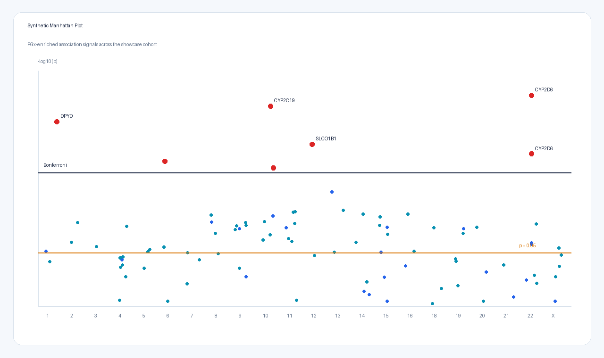
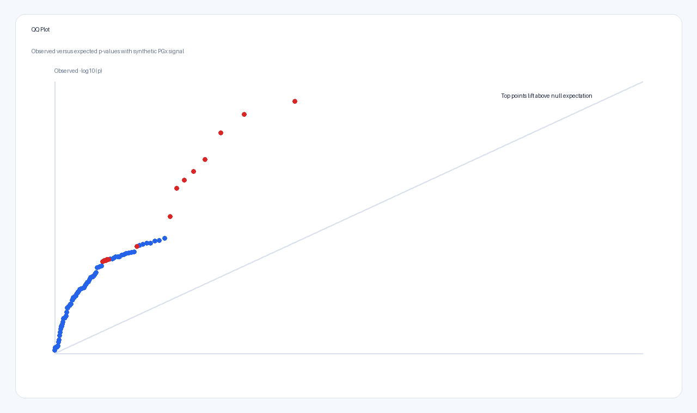
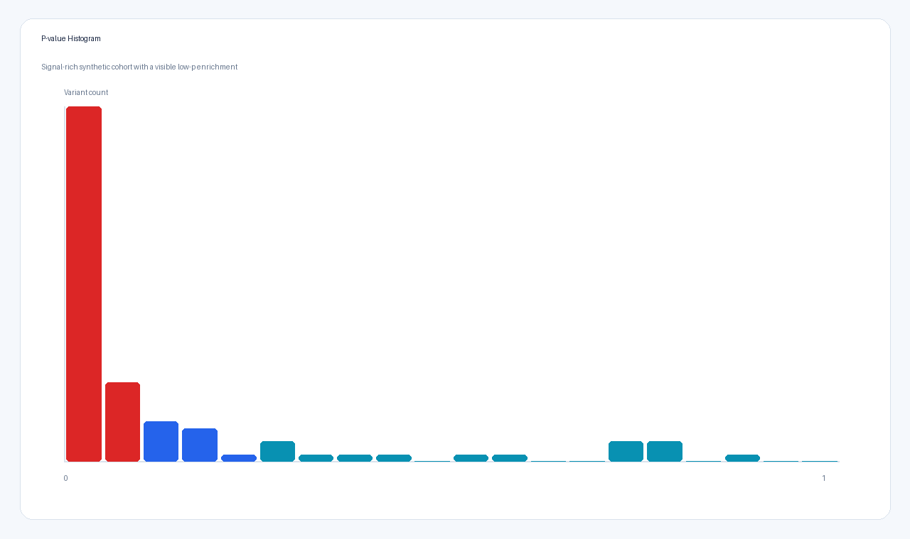
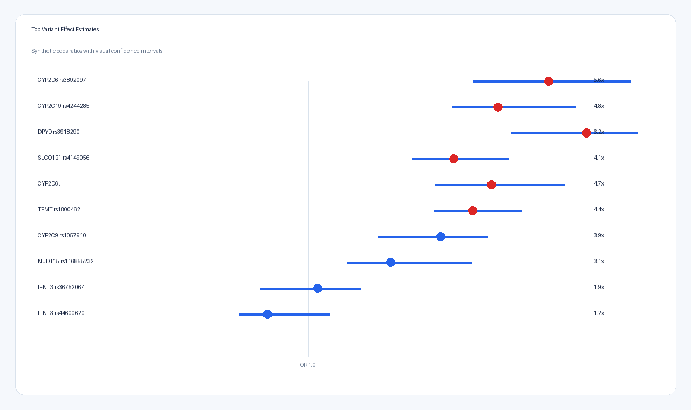
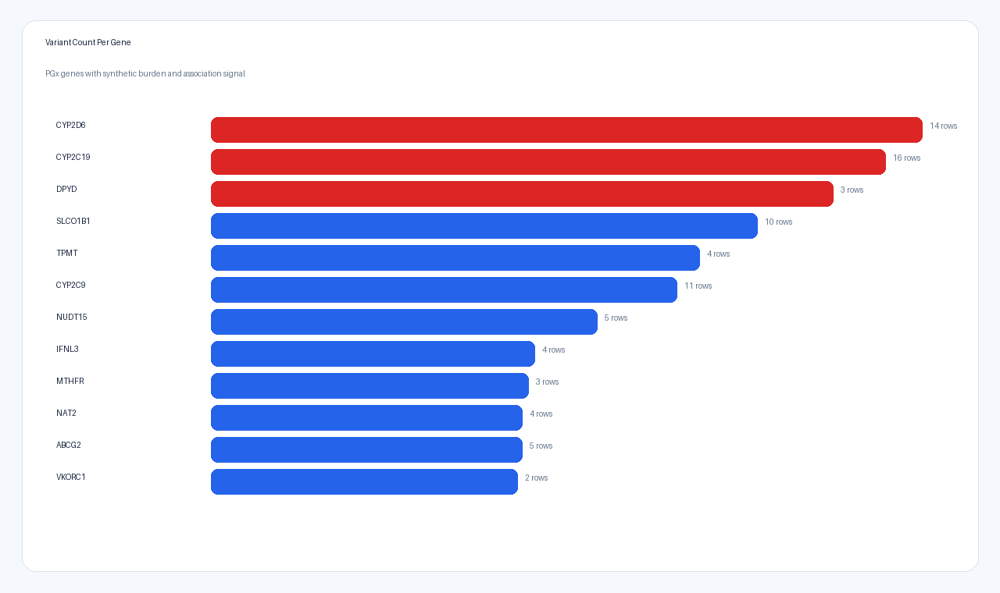
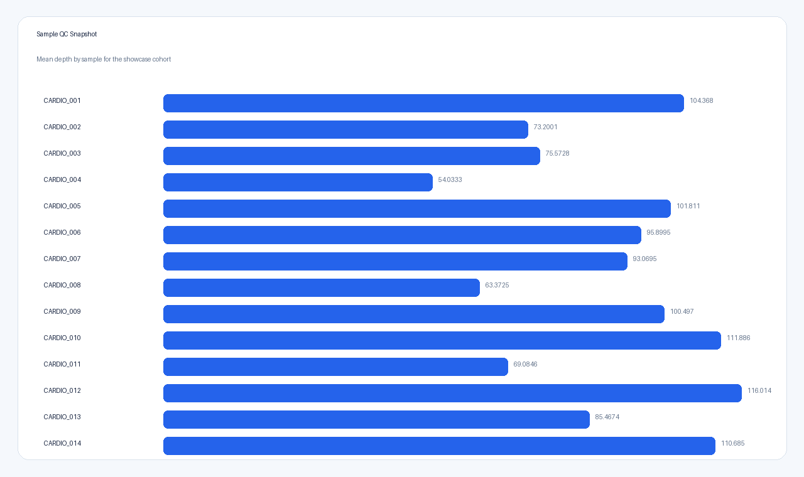
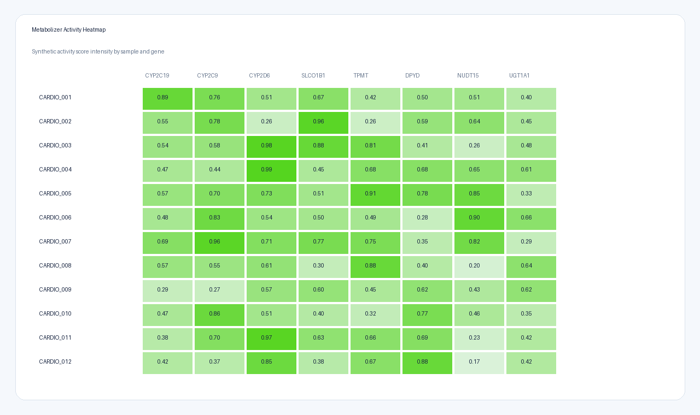
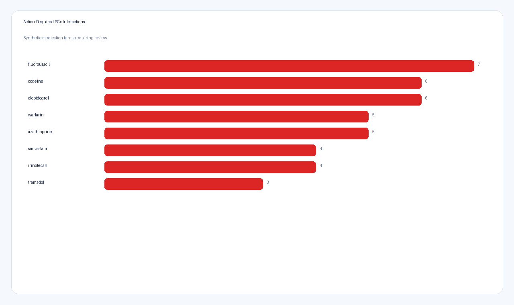
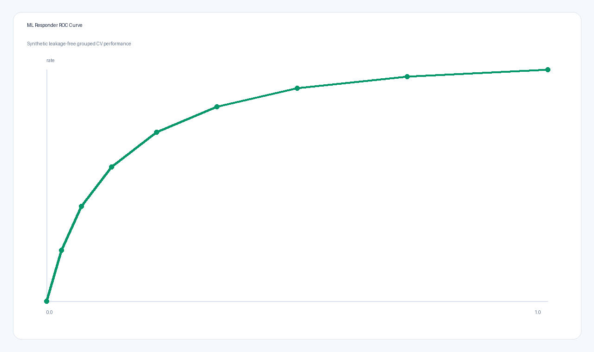
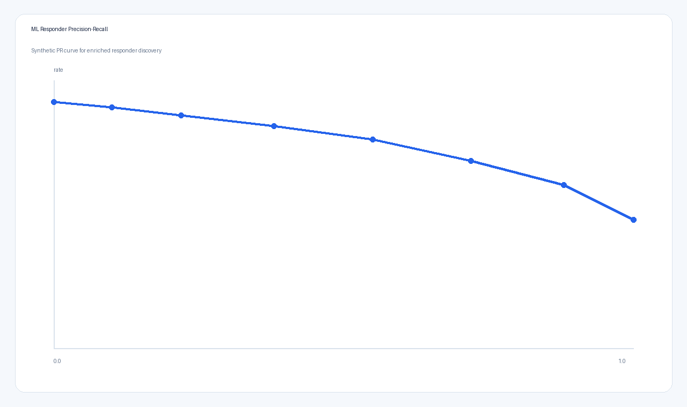
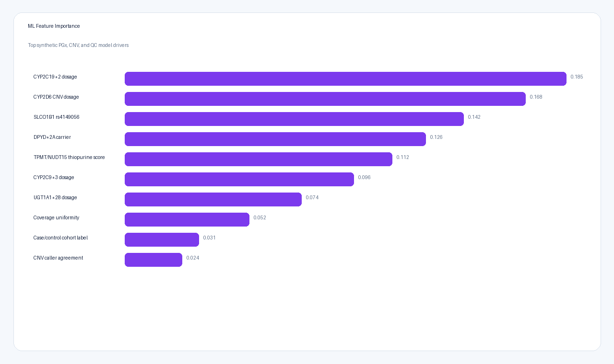
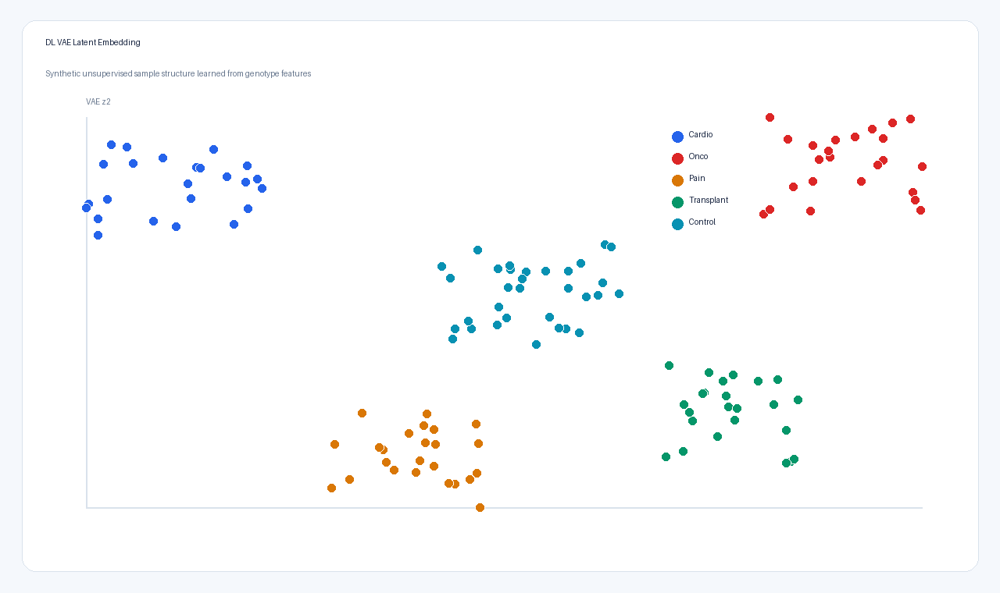
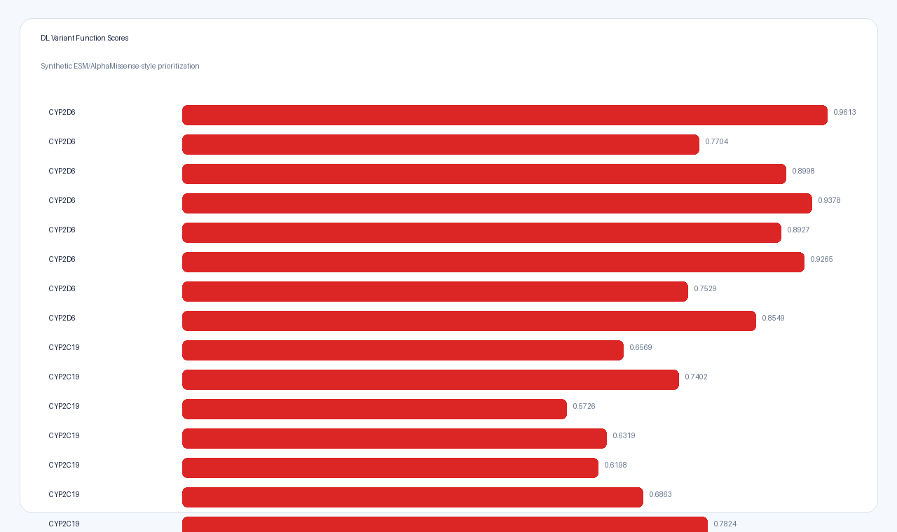
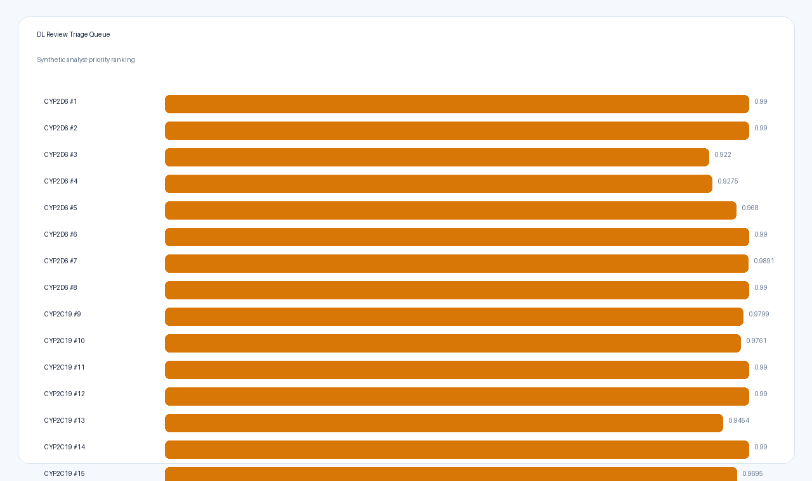
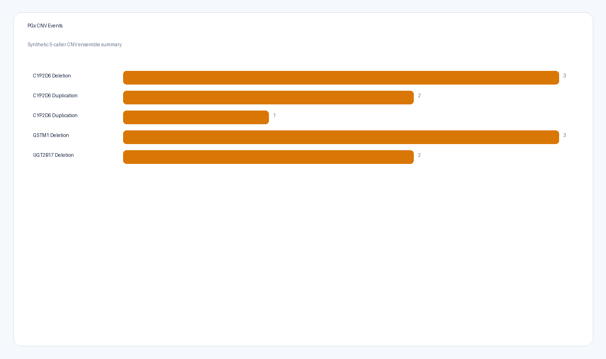
Top synthetic PGx findings
| Gene | Variant | Sample | Impact | ACMG | Medication terms | p-value |
|---|---|---|---|---|---|---|
| CYP2D6 | rs3892097 | CARDIO_019 | HIGH | Pathogenic | codeine; tramadol; tamoxifen; atomoxetine; metoprolol | 7e-06 |
| CYP2D6 | rs3892097 | CONTROL_015 | HIGH | Pathogenic | codeine; tramadol; tamoxifen; atomoxetine; metoprolol | 7e-06 |
| CYP2D6 | rs3892097 | CONTROL_023 | HIGH | Pathogenic | codeine; tramadol; tamoxifen; atomoxetine; metoprolol | 7e-06 |
| CYP2D6 | rs3892097 | ONCO_001 | HIGH | Pathogenic | codeine; tramadol; tamoxifen; atomoxetine; metoprolol | 7e-06 |
| CYP2D6 | rs3892097 | ONCO_011 | HIGH | Pathogenic | codeine; tramadol; tamoxifen; atomoxetine; metoprolol | 7e-06 |
| CYP2D6 | rs3892097 | ONCO_018 | HIGH | Pathogenic | codeine; tramadol; tamoxifen; atomoxetine; metoprolol | 7e-06 |
| CYP2D6 | rs3892097 | TRANSPLANT_012 | HIGH | Pathogenic | codeine; tramadol; tamoxifen; atomoxetine; metoprolol | 7e-06 |
| CYP2D6 | rs3892097 | TRANSPLANT_014 | HIGH | Pathogenic | codeine; tramadol; tamoxifen; atomoxetine; metoprolol | 7e-06 |
| CYP2C19 | rs4244285 | CARDIO_002 | MODERATE | Likely pathogenic | clopidogrel; omeprazole; escitalopram; voriconazole | 1.3e-05 |
| CYP2C19 | rs4244285 | CARDIO_003 | MODERATE | Likely pathogenic | clopidogrel; omeprazole; escitalopram; voriconazole | 1.3e-05 |
| CYP2C19 | rs4244285 | CARDIO_008 | MODERATE | Likely pathogenic | clopidogrel; omeprazole; escitalopram; voriconazole | 1.3e-05 |
| CYP2C19 | rs4244285 | CONTROL_003 | MODERATE | Likely pathogenic | clopidogrel; omeprazole; escitalopram; voriconazole | 1.3e-05 |
| CYP2C19 | rs4244285 | CONTROL_011 | MODERATE | Likely pathogenic | clopidogrel; omeprazole; escitalopram; voriconazole | 1.3e-05 |
| CYP2C19 | rs4244285 | CONTROL_013 | MODERATE | Likely pathogenic | clopidogrel; omeprazole; escitalopram; voriconazole | 1.3e-05 |
| CYP2C19 | rs4244285 | CONTROL_032 | MODERATE | Likely pathogenic | clopidogrel; omeprazole; escitalopram; voriconazole | 1.3e-05 |
| CYP2C19 | rs4244285 | ONCO_001 | MODERATE | Likely pathogenic | clopidogrel; omeprazole; escitalopram; voriconazole | 1.3e-05 |
| CYP2C19 | rs4244285 | ONCO_004 | MODERATE | Likely pathogenic | clopidogrel; omeprazole; escitalopram; voriconazole | 1.3e-05 |
| DPYD | rs3918290 | CARDIO_002 | HIGH | Pathogenic | fluorouracil; capecitabine; tegafur | 3.1e-05 |
| DPYD | rs3918290 | CONTROL_021 | HIGH | Pathogenic | fluorouracil; capecitabine; tegafur | 3.1e-05 |
| DPYD | rs3918290 | TRANSPLANT_019 | HIGH | Pathogenic | fluorouracil; capecitabine; tegafur | 3.1e-05 |
| SLCO1B1 | rs4149056 | CARDIO_022 | MODERATE | Likely pathogenic | simvastatin; atorvastatin; rosuvastatin | 0.00011 |
| SLCO1B1 | rs4149056 | CONTROL_001 | MODERATE | Likely pathogenic | simvastatin; atorvastatin; rosuvastatin | 0.00011 |
| SLCO1B1 | rs4149056 | CONTROL_010 | MODERATE | Likely pathogenic | simvastatin; atorvastatin; rosuvastatin | 0.00011 |
| SLCO1B1 | rs4149056 | CONTROL_011 | MODERATE | Likely pathogenic | simvastatin; atorvastatin; rosuvastatin | 0.00011 |
| SLCO1B1 | rs4149056 | CONTROL_015 | MODERATE | Likely pathogenic | simvastatin; atorvastatin; rosuvastatin | 0.00011 |
| SLCO1B1 | rs4149056 | ONCO_018 | MODERATE | Likely pathogenic | simvastatin; atorvastatin; rosuvastatin | 0.00011 |
| SLCO1B1 | rs4149056 | ONCO_022 | MODERATE | Likely pathogenic | simvastatin; atorvastatin; rosuvastatin | 0.00011 |
| SLCO1B1 | rs4149056 | PAIN_023 | MODERATE | Likely pathogenic | simvastatin; atorvastatin; rosuvastatin | 0.00011 |
| SLCO1B1 | rs4149056 | TRANSPLANT_002 | MODERATE | Likely pathogenic | simvastatin; atorvastatin; rosuvastatin | 0.00011 |
| SLCO1B1 | rs4149056 | TRANSPLANT_005 | MODERATE | Likely pathogenic | simvastatin; atorvastatin; rosuvastatin | 0.00011 |